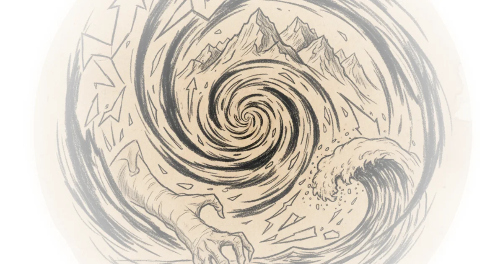

A Statistical Claim Meets the Data It Rode In On
A 2024 paper in the Proceedings of the National Academy of Sciences by Kevin Chen, Xueke Li, and colleagues at the University of Pennsylvania, with climate scientist Michael E. Mann as senior author, claims to show that the strongest nor'easters have grown measurably more intense over the past eight decades. The finding generated widespread media coverage. Live Science reported that nor'easters "have become 20% more destructive in the last 80 years." Inside Climate News declared that "the strongest ones are clearly getting stronger." The University of Pennsylvania's own press release called the findings "unquestionable."
Roger Pielke Jr. is not convinced. Not even close.

In a detailed technical reanalysis, Pielke dismantles the paper's headline claims by doing something deceptively simple: reading the supplementary material the authors themselves published, then extending their methods. The result is a case study in how modest, ambiguous findings get laundered into certainty through press releases, blog posts, and credulous reporting.
What the Paper Actually Found
Chen et al. used ERA5, the European Centre for Medium-Range Weather Forecasts' global reanalysis dataset, to reconstruct a record of approximately 900 nor'easters from 1940 to 2024. They applied quantile regression to examine whether the most intense storms have grown stronger over time. Their headline number: peak wind speeds for the top one percent of storms increased by roughly six percent, from about 31 meters per second to 33 meters per second. By cubing that wind speed increase, they arrived at the eye-catching claim of a 20 percent rise in destructive power.
Our analysis of nor'easter characteristics reveals that the strongest nor'easters are becoming stronger.
Six percent over 85 years. That is roughly 0.2 meters per second per decade at the 99th percentile. Pielke notes this is a vanishingly small signal, and the question is whether the data can support it at all.
The Supplementary Material Problem
The most damaging evidence against the paper's claims comes from the paper itself. Chen et al. included a satellite-era analysis covering 1979 to 2024, the period when global weather observations became far more comprehensive and reliable. Pielke highlights what this analysis actually shows:
The satellite-era analysis (1979-2024) does show nominally significant trends — but they are concentrated in the 60th to 78th percentile range of storm intensity, not at the extreme tail, as claimed in the main body of the text.
In other words, the strongest storms that drove the headlines are precisely the ones for which the most trustworthy data offers the weakest support. The statistical significance at the 95th and 99th percentiles does not reach conventional thresholds during the satellite era.
It gets worse. When the authors trimmed just a single decade from the start of the record, beginning in 1950 instead of 1940:
Statistical significance almost completely disappears across the distribution.
One decade of sparse, pre-satellite data is doing an enormous amount of heavy lifting. Pielke calls this "inconvenient information" that was "reported in the supplementary material but not discussed in the paper, in the university press release, or the senior author's blog post."
ERA5 Cannot Do What They Asked It to Do
The deeper problem is the dataset itself. ERA5 reconstructs historical atmospheric conditions by feeding observations into a numerical weather model. But the observation network changed dramatically over the study period. In 1940, ERA5 worked with roughly 17,000 global observations per day, almost entirely from land stations and ships. By 2022, that number had grown to 25 million observations per day with global satellite coverage.
Any reanalysis that is data-sparse over the ocean over the 1940s to 70s and data-rich from 1979 onward will tend to show apparent improvement in storm intensity over time, partly reflecting improved data coverage rather than real changes in storm behavior.
Pielke points to independent validation studies showing that ERA5 systematically underestimates wind speeds within extratropical cyclone centers, with a negative bias of roughly ten percent for the most extreme storms. That bias is not constant over time. Because early-record observations are sparser, early storms are likely underestimated more severely than recent ones, creating exactly the kind of spurious upward trend Chen et al. report.
The claimed signal of six percent sits comfortably within the known error margins of the instrument being used to measure it. As Pielke frames it:
The reanalysis data cannot currently be used to distinguish a real trend from a measurement artifact.
The IPCC Already Weighed In
Pielke situates Chen et al. against the Intergovernmental Panel on Climate Change's Sixth Assessment Report, which represents the broadest scientific consensus on climate trends. The IPCC's position on extratropical cyclone intensity is unambiguous:
There is low confidence in past changes of maximum wind speeds and other measures of dynamical intensity of extratropical cyclones.
The IPCC further concludes that even under the most extreme climate scenarios, the signal of changing extratropical cyclone wind speeds is not expected to emerge from natural variability during this century. A single paper using a single reanalysis dataset does not overturn that assessment, regardless of how confidently its findings are presented to journalists.
From Research to Headlines
Pielke reserves his sharpest critique for the post-publication communication chain. Mann, in his blog post accompanying the paper, stated that intensification "can now be seen in the observations." The university press release called the findings "unquestionable." Media outlets translated ambiguous statistical results into declarative headlines.
Loose standards of scientific quality may help to generate breathless headlines, but does not serve improved scientific understandings or public confidence in climate science.
This pattern is familiar to readers of Pielke's work. Uncertain findings become confident claims become settled fact, with each link in the chain shedding a layer of nuance. The supplementary material tells one story. The press release tells another.
Where the Critique Could Go Further
Pielke's analysis is thorough on the statistical and data-quality fronts, but it is worth noting what he does not attempt. He does not offer an alternative explanation for the modest trends that do appear in the satellite-era middle percentiles. If ERA5 biases were the sole driver, one might expect the spurious trend to appear uniformly across all percentiles rather than clustering in the 60th-to-78th range. The physical mechanism proposed by Chen et al., warming Atlantic sea surface temperatures feeding storm intensification, is plausible even if the statistical evidence is currently too weak to confirm it. The absence of a detectable signal is not the same as the absence of a real phenomenon.
Additionally, Pielke's replication relies partly on digitizing figures from the published paper rather than accessing the raw storm data directly, which introduces its own layer of approximation, though he is transparent about this limitation.
Bottom Line
Roger Pielke Jr. makes a convincing case that Chen et al.'s headline findings, the ones that generated breathless media coverage about nor'easters becoming dramatically more destructive, rest on a fragile statistical foundation. The claimed six percent wind speed increase over 85 years falls within the known error bounds of the ERA5 reanalysis. The result is sensitive to start date. The satellite-era data, the most reliable portion of the record, does not support the paper's strongest claims. And the IPCC, drawing on a far broader evidence base, rates confidence in past changes to extratropical cyclone intensity as low.
None of this means nor'easters are definitely not intensifying. It means the data cannot yet tell us one way or the other. That is a legitimate and important scientific finding. But it does not make for a compelling press release, and therein lies the problem Pielke keeps diagnosing: the gap between what climate research actually shows and what the public is told it shows.